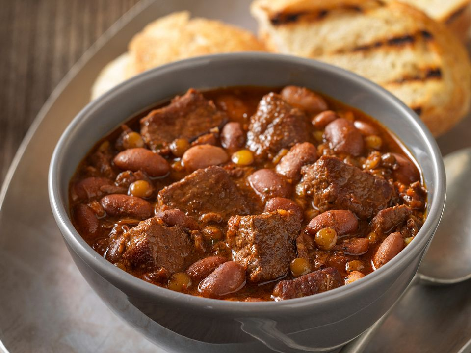

Beans Stew Recipe

Beans Stew
The meal shown above is a locally Ghanaian dish (beans stew)
INGREDIENT
- beans
- oil
- fresh tomatoes
- tomato paste
- spices (ginger, garlic, onions, pepper, external sachet spices)
- Gizzards
- Chicken
STEPS
- boil up beans till tender
- steam up gizzards and chicken
- heat up some amount of oil in a saucepan
- add up some onions
- chop your tomatoes and add to oil
- stir up a bit and add your tomato paste
- let it cook for 7 mins and add up your spices
- stir up for sometime and add your meat stock
- let it cook for 10 mins and add your cooked beans
- stir evenly and let it cook
- shallow fry your gizzard and chicken
- add the fried protein to stew and stir up well
- let it cook for 10mins
- enjoy your meal with rice, yam or any desired choice
Home